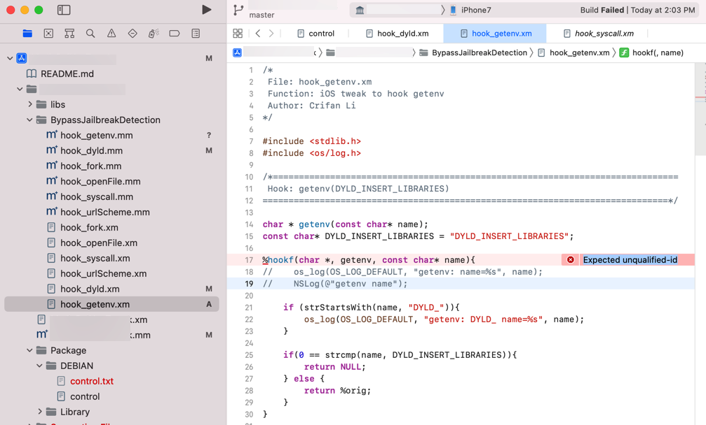
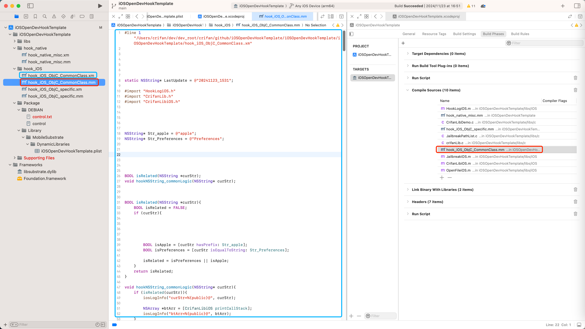

Compile Sources中误添加了不支持的.xm
现象
iOSOpenDev中，新增.xm文件后，尝试去编译
结果代码：
%hookf(char *, getenv, const char* name){
其中的%hookf，编译报错：
Expected unqualified-id

原因
直接原因
iOS的clang编译器无法识别（Logos的）语法：%hookf
根本原因
之前新增.xm文件时，无意间，不知道是哪里不小心，（把）导致了.xm，被加到了Xcode（+iOSOpenDev）中的Compile Sources中了
而此处，iOSOpenDev的最终的所支持的代码逻辑对应的源代码文件的格式：
- 不支持：
.xm - 只支持：
.mm
而此处，背后的.xm和.mm的逻辑，详见：
解决办法
- 去
Compile Sources中，把.xm文件移除掉 - Xcode重新编译
Build- 目的：从
.xm中编译生成对应的.mm文件
- 目的：从
- 再去把新生成的
.mm文件，加到Compile Sources中，即可正常编译
具体步骤
Xcode->Targets->Build Phases->Compile Sources
如果有.xm文件：则（点击➖）去删除掉
再去Xcode->Build：
对于新增的.xm文件，则会生成新的对应的.mm文件
然后再去：
Xcode->项目主目录->右键->Add Files to ... -> 选择新生成的对应的.mm文件，且勾选：Copy items if needed->Add，即可把.mm加到项目中
最后：Xcode->Targets->Build Phases->Compile Sources
只保留正常的.mm文件（和其他的.c、.m等文件）：
